地政学
ライン・ルールはライン川の欧州回廊にあり、オランダ港湾、ベルギー、フランス、ドイツ内陸を結びます。炭田と河川が産業国家を支え、現在は物流、大学、展示会、州都の機能が多核都市圏の重みを保つ要地です。

🇩🇪 ドイツ / ノルトライン＝ヴェストファーレン州 / World City Atlas
デュッセルドルフ、ケルン、ドルトムント、エッセン、デュースブルク、ボーフムなどが連なるドイツ最大級の多核都市圏。石炭と鉄鋼の記憶、ライン川の物流、化学と先端製造、大学、移民文化、サッカー、緑の再生が重なります。
都市の骨格
ライン・ルールは一つの中心を持つ都市ではなく、自治体、鉄道、港、大学、工業跡地、住宅地が密に連なる都市群です。重工業の時代を終えた場所が、物流、研究、文化、緑地へ転換する過程を読む地域です。
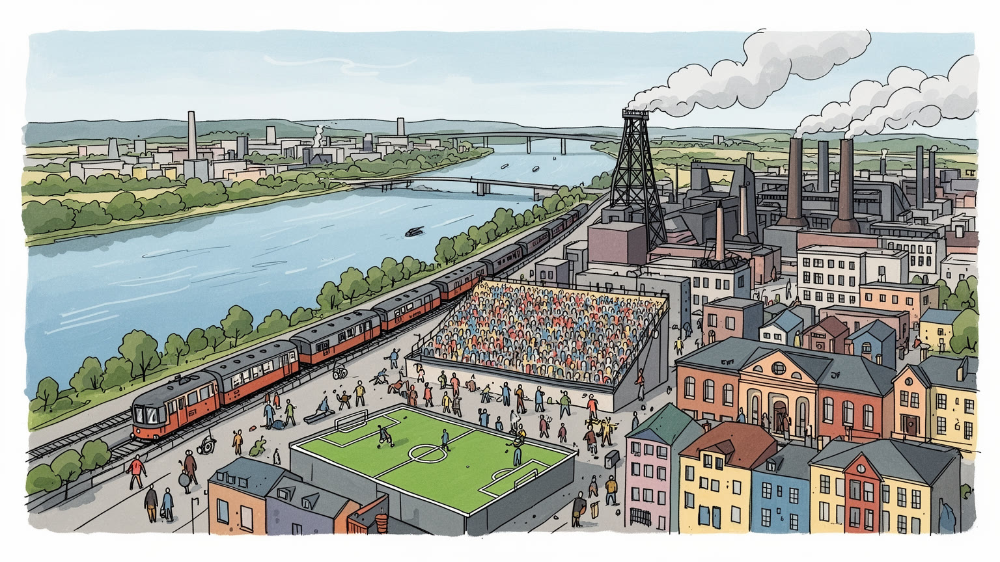
ライン・ルールはライン川の欧州回廊にあり、オランダ港湾、ベルギー、フランス、ドイツ内陸を結びます。炭田と河川が産業国家を支え、現在は物流、大学、展示会、州都の機能が多核都市圏の重みを保つ要地です。
石炭と鉄鋼は縮小し、化学、機械、素材、物流、医療、研究、サービスが雇用を支えます。閉山と合理化の痛み、労組の記憶、再訓練、移民労働が、地域経済の現在を形づくります。現場の技能も今なお地域に残ります。
カトリックとプロテスタント、モスク、労働者合唱、劇場、美術館、サッカー、食の店が文化を厚くします。トルコ系を含む家族史が旧工業地帯を多言語の生活圏へ変え、祈りと応援が街を結びます。夜の音楽も根づきます。
旅行者は工業遺産、河畔、美術館、旧製鉄所、サッカー場を巡りますが、住民は通勤、住宅団地、教育、買物、環境再生と向き合います。緑道、市場、駅の距離感が、子どもと高齢者の日常を支えます。市場の匂いも残ります。
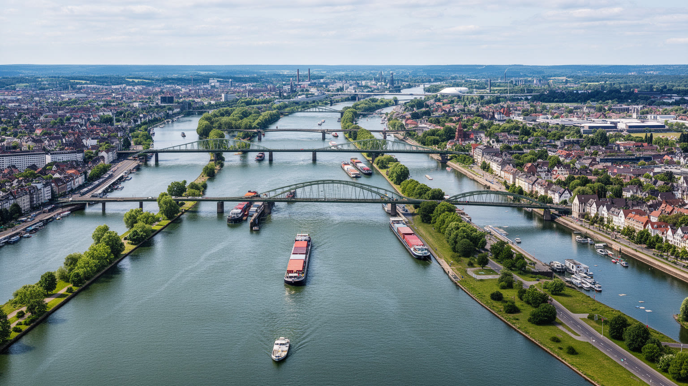
ライン・ルールを理解する入口は、ライン川とルール川がつくる流域の結節です。デュッセルドルフ、ケルン、デュースブルク、エッセン、ドルトムント、ボーフムなどは単独の大都市として競うだけでなく、河川、運河、鉄道、高速道路によって密につながります。ライン川は北海の港湾、スイス、フランス、ベネルクス、ドイツ内陸を結ぶ欧州の大動脈であり、ルール川周辺の炭田は近代ドイツの工業化を支えました。デュースブルク港のような内陸港は、海から遠い場所に国際物流の入口を置き、コンテナ、鋼材、化学品、機械、消費財を都市圏へ流します。河川は美しい景観である前に、資源、軍事、労働、環境汚染、再生の歴史を運んできました。洪水対策、水質改善、河岸の再開発、旧港湾地区の住宅化は、産業都市が生活都市へ姿を変える過程でもあります。ライン河畔の散歩道と旧工場の岸壁を同時に見ると、この地域の地理が過去の重さと現在の接続性を一つにしていることが分かります。多核都市圏の中心は一つの広場ではなく、川と線路が交差する場所の連なりにあります。水辺の都市は互いに近い一方で、方言、宗派、産業、行政の違いも強く残ります。細かな雨、貨物列車の低い音、川風の匂いが、その差異を一つの経済圏へ結びます。地図では市名が分かれていても、船と列車の時間は地域を一続きに見せます。
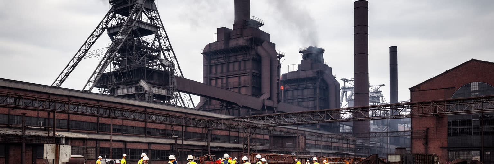
ルール地方の名を世界に刻んだのは、石炭と鉄鋼です。炭鉱、コークス炉、高炉、鉄道引き込み線、労働者住宅、企業城下町は、十九世紀から二十世紀にかけて地域の風景と社会を作り替えました。重工業はドイツの軍需、復興、輸出を支え、同時に危険な坑内労働、煤煙、粉じん、汚染、企業への依存を生みました。閉山と製鉄の縮小は、単なる産業構造の変化ではなく、地域の誇り、男性労働者の身分、家計、商店街、サッカークラブ、労組、自治体財政を揺さぶる出来事でした。現在、ツォルフェアアイン炭鉱のような工業遺産は博物館、イベント会場、デザイン、観光の場として再利用されていますが、保存は懐古だけではありません。Ruhrtriennaleのような舞台芸術や夜のクラブ企画は、高炉跡に音楽と人の熱を戻します。巨大な鉄骨や赤レンガを眺めると、産業の壮大さと労働の消耗が同時に見えます。ライン・ルールは重工業を失った地域ではなく、その遺産を背負いながら、文化、教育、研究、物流へ都市の基礎を組み直している地域です。鉱山閉鎖後も地下水の管理や地盤沈下への対応は続き、過去の産業は見えない維持費として現在に残ります。遺産は写真に映る建物だけでなく、地域が長く負担する責任でもあります。坑道を知らない世代にも、学校や家族の語り、旧社宅の街路、工場跡の祝祭を通じて、工業の時間は日常の背景として伝わっていきます。
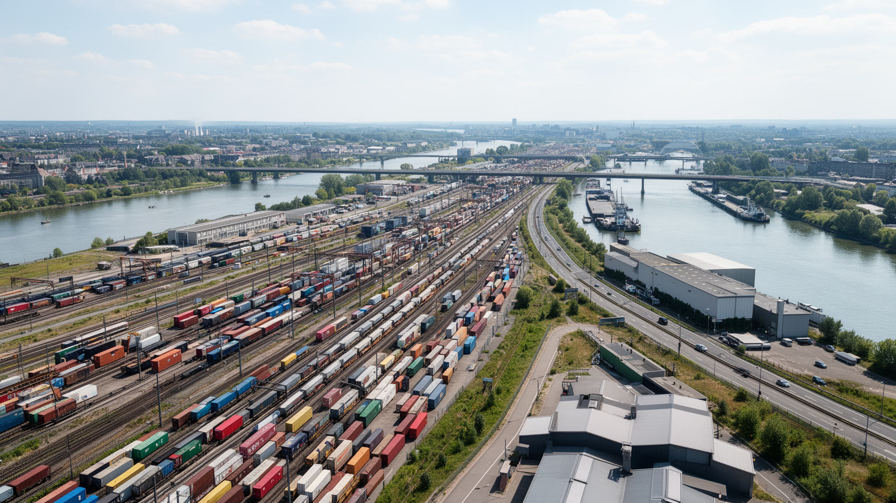
ライン・ルールの現在の強みは、古い工業基盤を引き継いだ物流と交通の密度にあります。デュースブルクの内陸港、ライン川の水運、貨物鉄道、アウトバーン、空港、展示会場、倉庫群は、欧州の市場を短い距離で結びます。石炭や鋼材を運んだ線路と運河は、いまではコンテナ、機械部品、化学品、食品、オンライン小売の商品を動かすインフラになりました。デュッセルドルフやケルンの空港、ドルトムントやエッセン方面の物流団地、州内外の鉄道結節は、都市圏を通過する流れを仕事へ変えます。ただし、物流の便利さは騒音、排気、トラック交通、倉庫の低賃金、夜間勤務、土地利用の圧力も伴います。Sバーン、トラム、貨物列車が雨のホームや住宅地の裏を抜ける音は、多核都市圏の生活音そのものです。そのため交通は観光客の移動手段ではなく、地域全体を一つの労働市場として機能させる基礎です。貨物と通勤者が同じ回廊を使うこの地域では、線路、駅、港、道路の整備が、産業政策であり生活政策でもあります。駅の改修や貨物線の増強は地味に見えますが、企業立地、大学通学、病院へのアクセスを左右します。移動の信頼性が落ちれば、多核都市圏の利点はすぐに弱さへ変わります。物流の速さは、倉庫で働く人の休憩時間、深夜バスを待つ学生、住宅地の静けさとも交換関係にあります。
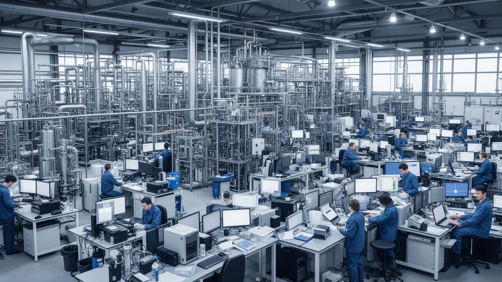
ライン・ルールを石炭と鉄だけで語ると、現在の産業の厚みを見落とします。ライン川沿いには化学、素材、製薬、精密機械、環境技術、エネルギー関連企業が集まり、大学や研究機関、展示会、専門サービスと結びついています。化学産業は水運、原料、電力、技術者、厳しい安全管理を必要とし、都市圏の高度な労働市場を支える一方、事故リスク、排出、水質、住民との距離を常に問われます。機械、金属加工、医療技術、デジタル制御、メンテナンスの仕事は、旧来の工業技能を新しい生産へつなぐ役割を持ちます。大企業の研究所だけでなく、中小サプライヤー、職業訓練校、専門学校、現場の保全技術が競争力の基礎になります。エネルギー価格の上昇や脱炭素規制は、重い産業を抱える地域に厳しい課題を突きつけますが、同時に水素、循環型素材、排熱利用、電化の実験場にもなります。ライン・ルールの産業転換は、工場を閉じてサービスだけに移る話ではありません。既存のプラントと技能をどう低炭素化し、研究と製造を同じ地域に残すかという実務の問題です。危険物を扱う産業が住宅地や川に近いことは、透明な情報公開と住民参加を必要にします。高付加価値の工業都市であり続けるには、安全への信頼も競争力の一部になります。働く人の技能継承と若い技術者の定着が進まなければ、研究成果は地域の仕事へ十分に戻りません。
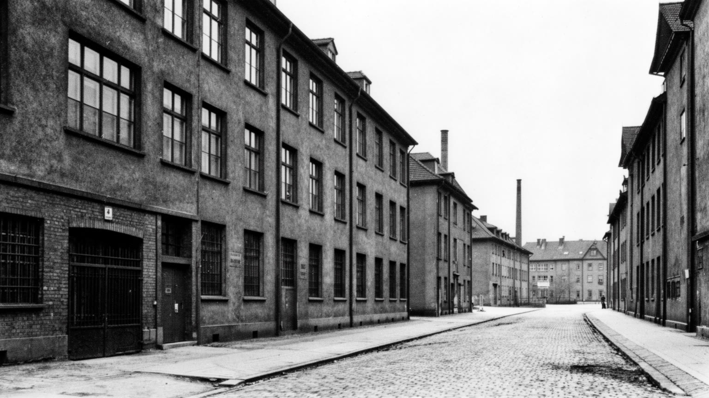
ライン・ルールの都市文化には、労働者の記憶が深く刻まれています。炭鉱や製鉄所では危険な仕事を共有する連帯が生まれ、労組、協同組合、地域クラブ、教会、酒場、合唱、サッカーチームが生活を支えました。閉山や合理化は失業を増やし、若者に別の技能を求め、旧工業地区の商店街を弱らせましたが、同時に再訓練、大学進学、公共投資、文化施設への転換を促しました。労働の記憶は、博物館の展示や記念碑だけでなく、住宅地の名前、祭り、家族の語り、スタジアムの応援に残ります。重工業の時代には、移民や地方出身者も労働力として招かれ、危険な現場や寮生活を通じて地域社会へ入っていりました。今日のサービス業や物流、介護、清掃、配達の仕事は、かつての炭鉱労働とは形が違いますが、安定した賃金と尊厳を求める問いは続いています。産業転換を成功と呼ぶには、跡地がきれいになるだけでは足りません。仕事を失った世代の経験を軽く扱わず、新しい世代が教育と雇用へ入れる道を作る必要があります。ライン・ルールを読むとは、重い産業の誇りと痛みを、現在の労働条件へつなげて考えることです。父や祖父の職場が消えた家庭では、転換は統計よりも記憶の問題になります。学校、職安、地域クラブがその記憶をどう受け止めるかが、次の世代の自信を左右します。新しい雇用が増えても、尊重される仕事でなければ地域の傷はふさがらありません。
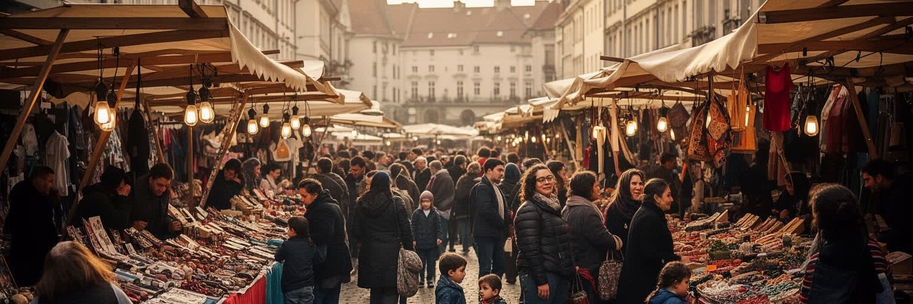
ライン・ルールの多文化性は、抽象的な国際性ではなく、工場と炭鉱が必要とした労働力の歴史から生まれました。トルコ系をはじめ、南欧、東欧、中東、アフリカ、アジアから来た人びとは、現場労働、家族の呼び寄せ、学校、商店、宗教施設を通じて地域に根を下ろしてきました。ケバブ店、トルコ食料品店、カリーヴルストの屋台、モスク、結婚式場、サッカークラブ、理髪店、語学支援のある学校は、旧工業都市を多言語の生活圏に変えました。移民の文化は、観光用の彩りではなく、労働力不足を支え、税を払い、地域の空き店舗を使い、家庭を築いてきた人びとの日常です。一方で、教育格差、差別、就職の壁、イスラムへの偏見、低所得地区の固定化は今も課題として残ります。第二世代、第三世代の若者は、ドイツ語で学び働きながら、家庭の言語や宗教、祖父母の移住記憶も受け継ぎます。ライン・ルールを読むには、旧高炉や美術館だけでなく、金曜礼拝、学校の保護者会、移民商店街、露店が並ぶ市場、地方議会の議論を見なければなりません。多核都市圏の再生は、移民を外側に置くのではなく、地域社会の中心にいる住民として扱えるかにかかっています。食卓や店先で混ざる言語は、統合の完成を示すものではなく、日々交渉される共生の姿です。違いを生活の普通として扱える場所ほど、地域の未来は開かれます。移民の子どもが大学や職場へ進む道を持てるかが、多文化都市圏の成熟を測る尺度になります。
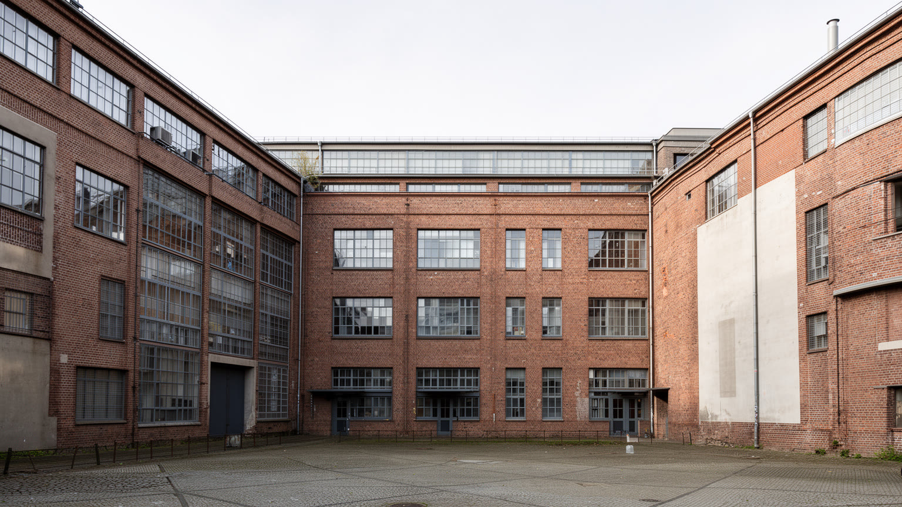
産業転換後のライン・ルールを支える重要な基盤が、大学と研究機関の密度です。ボーフム、ドルトムント、デュースブルク＝エッセン、ケルン、デュッセルドルフなどには大規模な大学、応用科学大学、医学研究、材料、エネルギー、情報、都市政策の研究拠点が広がります。かつて若者が炭鉱や工場へ向かった地域で、大学進学と職業訓練は新しい社会移動の道になりました。研究は単独で都市を変えるわけではありませんが、企業の開発部門、スタートアップ、病院、自治体、文化機関と結びつくことで、旧工業地帯に知識の仕事を増やします。学生は住宅需要、交通、夜の文化、多言語環境を作り、地域の高齢化を和らげる存在にもなります。一方で、大学が生む機会が低所得地区や移民家庭へ十分届くかは、学校教育、奨学金、言語支援、住居費に左右されます。ライン・ルールの研究都市化は、歴史を消して新しいイメージを貼る作業ではありません。実験室、図書館、病院、職業学校、工場跡地のキャンパスが、現場技能と学術知をつなげる試みです。大学の明かりは、重工業の煙の代わりに地域の未来を照らしますが、その光が広い住民へ届くかが問われています。研究都市としての成功は、論文や特許だけでなく、地元の若者が学び直し、子どもの教育や高齢者医療の質が上がり、企業が地域に残れるかで測られます。知識が生活へ戻る回路が重要です。
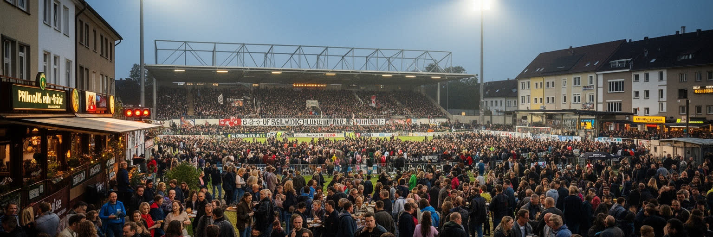
ライン・ルールでは、サッカーが単なる娯楽を超えて都市の感情を形づくります。ドルトムント、シャルケ、ボーフム、デュースブルク、エッセン、ケルン、デュッセルドルフ、レヴァークーゼンなどのクラブは、自治体の境界を越えて強い帰属意識を生み、旧炭鉱町や工場労働者の記憶と結びついています。試合の日には駅、ビールスタンド、住宅地、バー、家族の食卓が同じ色で染まり、分散した多核都市圏に一時的な中心が現れます。スタジアムは観光資源であり、警備、清掃、飲食、交通、放送、グッズ販売の雇用を生みますが、チケット価格、商業化、警察対応、ライバル関係の緊張も伴います。サッカー文化の魅力は、強豪クラブの成績だけではなく、地域リーグ、少年チーム、移民コミュニティのクラブ、学校のグラウンドまで広がる裾野にあります。炭鉱が閉じ、工場が縮小しても、スタジアムの歌は労働者地域の誇りを別の形で保ってきました。ライン・ルールを旅するなら、工業遺産と同じくらい、試合日の駅と街の空気を読む価値があります。サッカーは過去を美化するだけでなく、移民の若者、高齢のファン、家族連れが同じ都市名を声にする公共空間を作っています。地域紙、ラジオ、WDRの試合報道も、都市ごとの声色を広域へ伝えます。敗戦後の静かな駅や、勝利後の広場の歌も都市の記憶になります。だからスタジアムは、観光施設である前に地域の感情を集める広場でもあります。
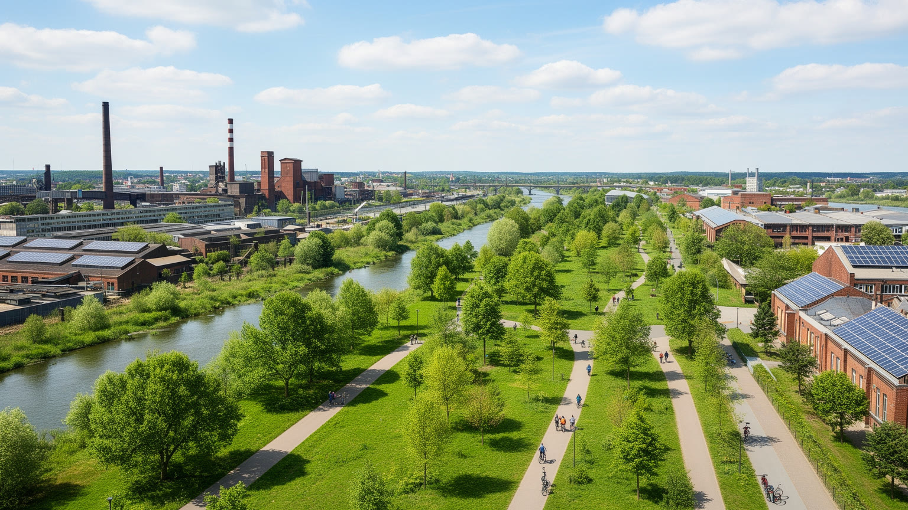
ライン・ルールの環境転換は、工業都市の飾りではなく、生存条件の更新です。かつて煤煙、汚れた河川、鉱害、褐色の空、重い交通は地域の代名詞でした。現在はエムシャー川の再生、旧鉄道敷の緑道、公園化された高炉跡、再生可能エネルギー、建物の断熱、公共交通の改善、工場の排出削減が進みます。工業遺産を緑地へ変える事業は、観光と住環境を高めますが、環境改善が家賃上昇や地区の入れ替わりを招くこともあります。脱炭素は重工業や化学産業の雇用に直結するため、単に石炭を過去のものにするだけでは済みません。水素、電化、循環型素材、廃熱利用、職業再訓練を組み合わせ、働く人が次の産業へ移れる道を作る必要があります。ライン・ルールの緑化は、自然へ戻る牧歌的な話ではなく、汚染された土地を安全にし、川を開き、道路の分断を和らげ、住民の健康を守る都市政策です。旧工場の赤い鉄骨のそばに木が育つ風景は、過去を消すのではなく、過去を見える形で抱えながら生活環境を直す姿を示します。気候危機の時代、この地域は重い産業を持つ都市圏がどう変われるかを試されています。緑道で子どもが自転車に乗り、高齢者が雨上がりのベンチで川風を待つ場面は、産業用地が生活の余白へ変わった証拠です。その余白を低所得地区にも広げられるかが、公平な転換の条件になります。環境再生が観光写真だけで終わらず、空気、通学路、夏の暑さを改善してこそ意味があります。
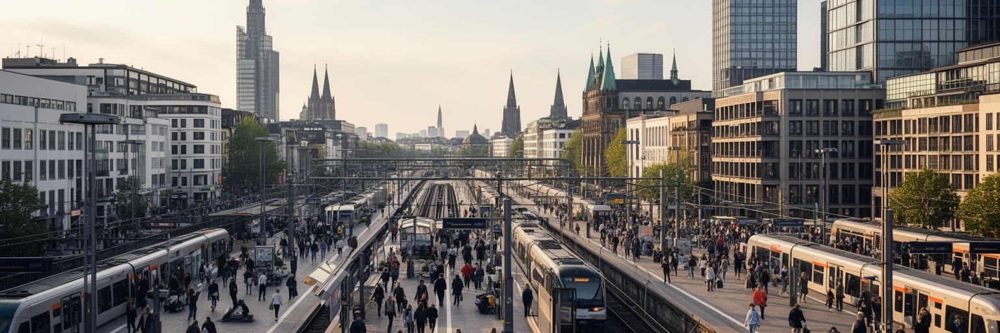
ライン・ルールの暮らしは、ロンドンやパリのような巨大中心へ集中する形とは違います。デュッセルドルフで働き、エッセンで暮らし、ケルンで学び、ドルトムントで試合を見るような横移動が日常にあります。駅前商店街、住宅団地、古い労働者住宅、再開発地区、大学キャンパス、郊外の緑地が短い距離で連続し、都市ごとに性格も違います。多核性は家賃や仕事の選択肢を広げる一方、行政境界、交通運賃、学校、医療、文化施設の配置を複雑にします。住民にとって重要なのは、どの都市が中心かより、通勤時間、保育、買物、医療、移民支援、週末の公園、サッカー場への行きやすさです。旧工業都市の中には失業や貧困が残る地区もあり、富裕なライン河畔や大学周辺との格差は小さくありません。多中心の都市圏では、問題も分散して見えやすく、どこか一つの華やかな都心だけを見ても全体はつかめません。ライン・ルールの生活を読むには、Sバーンの車窓、団地の中庭、移民商店街、週末市場、川辺の遊歩道、工業跡地の公園をつなげて見る必要があります。広がりの中にある近さ、近さの中にある差異が、この都市圏の日常を作っています。自治体をまたいで暮らす人が多いほど、保育、医療、クリスマスマーケット、買物通り、交通割引の制度差は生活の実感になります。地域全体で考える視点がなければ、多核性は便利さではなく分断にもなります。毎日の買物や通院の小さな移動が、広域都市圏の使いやすさを最も正直に示します。
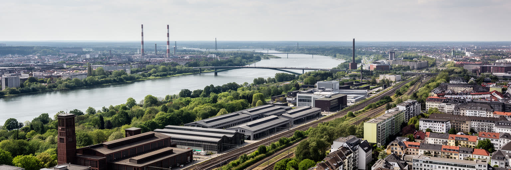
ライン・ルールを一つの都市として読むには、デュッセルドルフやケルンの中心部だけでは足りません。ライン川、ルール地方の炭鉱、デュースブルクの内陸港、エッセンの工業遺産、ドルトムントのスタジアム、ボーフムの大学、移民商店街、化学プラント、緑道を一続きに見る必要があります。この地域の重要性は、重工業の過去が大きかったからだけではありません。衰退の痛みを抱えながら、物流、研究、文化、サービス、環境再生へ都市圏を組み直してきた過程にあります。閉山は労働者の誇りを揺さぶり、汚染は住民の健康を傷つけ、移民は安い労働力としてだけ扱われる時期もありました。だから再生を語るなら、観光化された旧工場の美しさだけでなく、雇用、教育、差別、住宅、交通、脱炭素の現実を見なければなりません。ケルンのカーニバル、デュッセルドルフの買物文化、WDRや地域紙の報道は広域文化として影を落としますが、ルールの街ごとの声は同じではありません。川と鉄道が結ぶこの地域は、二十世紀の重い産業都市から、二十一世紀の知識と物流の大都市圏へ移る途中にいます。その途中の複雑さこそ、ライン・ルールを読む面白さです。旧工場の静けさ、駅の混雑、大学の講義室、モスクの礼拝、試合日の歓声は別々の断片ではありません。雨の石畳、ビールの泡、貨物線の響きまで結び直すと、欧州の工業社会がどのように次の都市像を探しているかが見えてきます。完成した物語ではなく、再生を続ける途中の地域として見ることが、この都市圏への最も誠実な読み方です。